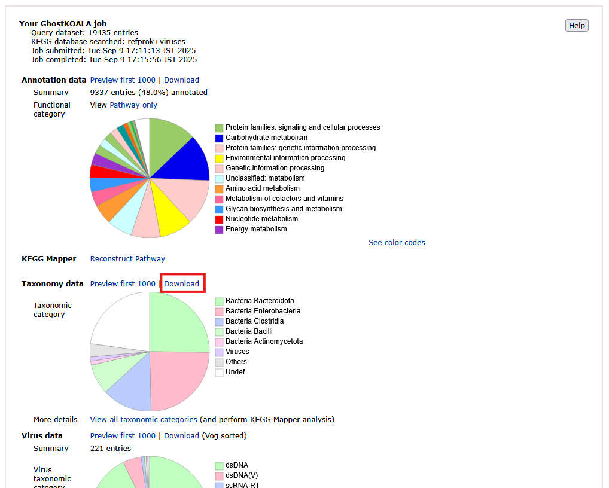

Preparing input data for meta-PepView
Meta-PepView combines metaproteomics data (DB search, de novo), raw spectral data (mzML, featureXML), and protein annotation data (taxonomy, functional) from several sources to provide interactive microbial community visualization and experiment evaluation. This section provides detailed information how to obtain input data for processing with meta-PepView, as well as considerations for data formatting to correctly parse and combine input data.
 IMPORTANT: When importing metaproteomics and annotation data for community analysis, always consider the protein ID format.
IMPORTANT: When importing metaproteomics and annotation data for community analysis, always consider the protein ID format.
Meta-PepView adds taxonomic and functional information to identified peptides (from DB search matching) by linking their IDs to taxonomy and function IDs from user-provided annotation files. This ID may be the peptide sequence string, or the protein ID from the sequence database used in DB search matching (which has to be provided in all files). The protein ID is often derived from the headers of a fasta file.
A major difficulty in data processing is maintaining consistency in protein ID extraction from the fasta header across input file sources (DB search, taxonomy, function annotation files). This is especially apparent in standardized fasta header formats.
For example, the fasta header of the Uniprot entry for an alcohol dehydrogenase in yeast looks like this:
>sp|P00331|ADH2_YEAST Alcohol dehydrogenase 2 OS=Saccharomyces cerevisiae (strain ATCC 204508 / S288c) OX=559292 GN=ADH2 PE=1 SV=3
The official Uniprot ID for this protein is P00331. Some data processing sources are informed of the Uniprot header format and will identify this protein correctly as P00331. However, other sources may take a general approach to get the protein ID and extract up to the first white-space, resulting in a different ID: sp|P00331|ADH2_YEAST. As a result, information cannot be linked between two sources that use different extraction rules.
How to process protein IDs
It is important to ensure that the protein ID is extracted in the same way for all data processing sources (metaproteomics and annotation data). It is recommended to extract a protein ID from the fasta header up to the first white-space. In most cases, this retains the full identifier to discern all proteins. Additionally, a manual check of the datasets is recommended to ensure that protein ID formats match between sources.
Finally, if protein IDs do not match between input data sources, meta-PepView provides an option to define custom regular expressions to extract substrings from the protein ID values.
Example
The Uniprot protein ID P00331 from the reported ID sp|P00331|ADH2_YEAST may be extracted with a regular expression that extracts all the text between the two "|" characters: (?<=\|).+(?=\|). The expression '(?<=\|)' means: look behind the "|" character and extract the pattern that corresponds to the regex after the "|". The expression '(?=\|)' means: look before the "|" character and extract the pattern that corresponds to the regex before it. Finally, the middle section '.+' means extract any one or more characters.
Metaproteomics data
Meta-PepView takes peptide identified scans as input for community processing. It supports direct import of peptide identification results from several DB search matching and de novo search tools. The general format of such datasets look like this:
| Scan | Peptide | Confidence | ... | Protein ID (DB search only) |
|---|---|---|---|---|
| 20739 | KVEAATLK | 87.3 | ... | Protein-A;Protein-B |
| 20313 | KVEAATLK | 78.5 | ... | Protein-A;Protein-B |
| 21165 | KVEAATLK | 54.9 | ... | Protein-A;Protein-B |
| 13211 | TSILDAIR | 79.6 | ... | Protein-C |
| 13587 | TSILDAIR | 70.2 | ... | Protein-C |
| ... | ... | ... | ... | ... |
Note
Meta-PepView has been tested on Thermo Fisher Scientific Orbitrap Mass spectrometers, where acquisition of spectra has been done in Data-Dependent Acquisition (DDA) mode. Support of other MS systems or acquisition modes is not guaranteed.
Import DB search matching data
DB search matching engines identify peptide sequences from raw mass spectrometry data by matching MS2 spectra against theoretical spectra derived from a user supplied protein sequence database (as fasta). This results in a dataset of scans with matched peptide sequences, and also shows to what proteins match to the peptides. Through decoy strategies, the False Discovery Rate can be calculated and subsequently controlled in the output data. Many search engines do this internally, eliminating the need for pre-filtering during data processing.
The following DB search engines are supported in meta-PepView:
- Sage: Meta-PepView supports direct import of the
results.sage.tsvfile generated by Sage. - Peaks Studio 10/11: Meta-PepView supports direct import of the
DB search psm.csv(Peaks Studio 10) ordb.psms.csv(Peaks Studio 11) export data. - MaxQuant: Meta-PepView supports direct import of
evidence.txtfile generated by MaxQuant
Import de novo identification data
De novo search engines identify peptide sequences directly from raw mass spectrometry data without use of a protein sequence database. While it is easy to set up such an analysis as there is no need to prepare a sequence database, it also provides a peptide identification method that is not affected by potential biases that may emerge from the protein sequence database. On the other hand, a lack of spectrum matching decreases the confidence of identified peptide sequences, resulting in much fewer and potentially inaccurate peptide identifications. In addition, there is no robust decoy strategy to estimate the False Discovery Rate from the identified peptides.
The following de novo identification engines are supported in meta-PepView:
- Peaks Studio 10/11: Meta-PepView supports direct import of the
de novo peptides.csv(Peaks Studio 10) orXXX.denovo.csv(Peaks Studio 11) export data (XXXrefers to the project name). - Novor (SearchGUI): Meta-PepView supports direct import of
XXX.novor.csvgenerated from the Novor engine in SearchGUI. NOTE: de novo sequencing reports from novor.cloud are a different format and is not supported inside meta-PepView as of yet. - Casanovo: Meta-PepView supports direct import of
XXX.mztabde novo results generated from Casanovo.
Dashboard features per input format
Depending on the input format, some dashboard features may not be present due to the absence of some data fields in the input. The following features may be absent depending on the input format:
- Signal intensity quantification: taxonomy or protein function abundance by combined signal intensity is not supported for some input data formats due to lack of intensity reporting in the results.
- Spectral evaluation: Novor, as provided in SearchGUI, does not correctly report scan numbers. As a result, peptide identifications cannot be linked to scans and some graphs in the Experimental quality module will not be displayed properly.
Below is an overview of feature support for each input format:
| Input format | Intensity quantification | Spectral evaluation |
|---|---|---|
| Peaks Studio 10/11 | ||
| MaxQuant | ||
| Sage | ||
| Novor | ||
| Casanovo |
Taxonomy/Function annotation data
Import taxonomy annotation data
Taxonomy annotation adds taxonomic information to the identified peptides by mapping their corresponding protein IDs or peptide sequence to taxonomy IDs (In meta-PepView, the protein ID/peptide sequence is referred to as Accession). Unfortunately, tools that provide taxonomy information to proteins in a well defined format are sparse. Generally, it is recommended to extract taxonomy information from Uniprot by performing alignment of the UniprotKB database to a local protein fasta (for example derived from a metagenome), or by downloading a protein fasta in Uniprot format. Detailed information how to generate your own taxonomy annotation is shown in Generating your own taxonomy annotation data.
However, for quick and easy taxonomy annotation. Meta-PepView provides direct import of GhostKOALA taxonomy results. While it is designed for functional annotation, GhostKOALA also provides taxonomy information to proteins at the Genus level. However, as the KEGG database is smaller than Uniprot and NCBI, and taxonomy resolution is capped at Genus level. The taxonomy information provided from this dataset is limited and biases may be present in the composition.
Taxonomy annotation from GhostKOALA
The easiest method to provide taxonomy information is by directly importing GhostKOALA results. To import taxonomy information from GhostKOALA results, select the format "GhostKOALA" in the taxonomy annotation box. To generate the results, start a job in the GhostKOALA dashboard, using the same protein fasta file used in DB search matching. After the job is finished, the results can be downloaded from the results page. Meta-PepView expects the Taxonomy data results provided by GhostKOALA. This usually is stored in the file user.out.top.

Results page after annotation job is finished. Download taxonomy and function information from the 'Taxonomy data' field. This downloads the user.out.top output file (compressed in zip archive).
Note
GhostKOALA adds user: as prefix before each accession ID. This is automatically filtered out by meta-PepView. Therefore, no regular expression pattern is needed to manage the user: prefix.
This dataset includes both taxonomy and function information, and can therefore also be used as functional annotation dataset.
Generating your own taxonomy annotation data
To provide detailed taxonomy information for a microbial community, it is recommended to generate the protein-to-taxonomy-mapping yourself in GTDB or NCBI format. Here, meta-PepView expects a tabular text format (e.g. csv, tsv, etc.) that provides an accession column that matches the protein IDs/peptide sequences from the DB search dataset, and a NCBI or GTDB format taxonomy ID column:
| Accession (Protein id) | Taxonomy ID (NCBI) |
|---|---|
| Protein-A | 562 |
| Protein-B | 550 |
| Protein-C | 4932 |
| ... | ... |
Alternatively:
| Accession (Peptide sequence) | Taxonomy ID (NCBI) |
|---|---|
| KVEAATLK | 562 |
| TSILDAIR | 550 |
| ... | ... |
Ideally, the dataset should be non-redundant for protein IDs/peptide sequences, where every protein ID is only present once. However, many alignment tools provide top n reporting of matches, causing a single accession to be reported multiple times (often with different taxonomy IDs). If there is redundancy in accessions, meta-PepView will resolve the taxonomy ID for each accession internally. In case a single accession is linked to different taxonomy IDs, meta-PepView will compute the Last Common Ancestor taxonomy ID to which all reported taxonomies are descended from. However, if the dataset is large and has strong redundancy, this may take some time to process.
The standard format expected by meta-PepView is a tsv file (delimiter \t) with Accession (protein ID/peptide sequence) as the first column (Accession column index 0) and taxonomy ID as second column (Taxonomy column index 1). However, meta-PepView provides several options to read differently formatted files, as shown in Data Import section.
There are several options to customize the taxonomy annotation dataset. The accession may be set to protein ID or peptide sequence, column indices for accession and taxonomy may be customized, and a regex pattern may be given to take only a pattern from the accession (useful if a prefix needs to be removed).
In addition, meta-PepView can process either taxonomy IDs, or taxonomy names in the input dataset. However, it is strongly recommended to match accessions to taxonomy IDs; In NCBI, one taxonomy ID may be assigned multiple taxonomy names (aliases), or multiple taxonomy IDs may share identical taxonomy names. On the other hand, a taxonomy ID will always represent a unique taxonomy group.
How to obtain accession-taxonomy map dataset
Taxonomy information from protein IDs may be obtained from the Uniprot database. Here, taxonomy IDs are easily linked to the protein ID from the fasta header:
UniprotKB format: (Taxonomy ID in OX=... field)
>sp|P0A796|PFKA_ECOLI ATP-dependent 6-phosphofructokinase isozyme 1 OS=Escherichia coli (strain K12) OX=83333 GN=pfkA PE=1 SV=1
MIKKIGVLTSGGDAPGMNAAIRGVVRSALTEGLEVMGIYDGYLGLYEDRMVQLDRYSVSD
MINRGGTFLGSARFPEFRDENIRAVAIENLKKRGIDALVVIGGDGSYMGAMRLTEMGFPC
IGLPGTIDNDIKGTDYTIGFFTALSTVVEAIDRLRDTSSSHQRISVVEVMGRYCGDLTLA
AAIAGGCEFVVVPEVEFSREDLVNEIKAGIAKGKKHAIVAITEHMCDVDELAHFIEKETG
RETRATVLGHIQRGGSPVPYDRILASRMGAYAIDLLLAGYGGRCVGIQNEQLVHHDIIDA
IENMKRPFKGDWLDCAKKLY
Uniref format: (Taxonomy ID in TaxID=... field)
>UniRef100_A0A143Q7I6 ATP-dependent 6-phosphofructokinase isozyme 2 n=1 Tax=Rhodococcus sp. PBTS 1 TaxID=1653478 RepID=A0A143Q7I6_9NOCA
MILTLTANPSMDRTVTLDAALQRGAVHRATTTTTDPGGKGVNVARVLTAAGRPCTAVLPG
TGSDPLLGALGALGVRYHAVPTTGLARTNLTVSEPDGTTTKINEPGTALAPETVAGLTAS
VRELAQRAQWVVLSGSVPPGVDAGWYGDLVAAVRETSARVAVDTSDAPLLALAAGFPRTA
PDLIKPNAEELGQLTGRDGEVLEHAAAQGDPMPTVEAARILVDRGVGAVLATLGASGAVL
VTATGAWFATPPPITPRSTVGAGDSSLAGYVLADLDGADGAGRLARAVAYGSAAAALPGT
RLPTPTDVHVDAVPVRSLSLPGSSALARHTS
If DB search matching is done with a Uniprot/Uniref header formatted fasta file as protein sequence database, there are several strategies to obtain a protein ID-taxonomy map. If the fasta was exported from the Uniprot website, the same dataset can be exported in tsv format from the website. Make sure to select the protein ID (Entry) and the taxonomy ID (Organism (ID)).
Alternatively, an accession-taxonomy-map dataset (using protein IDs) may created directly from the fasta. Below is an example to extract all protein ID-tax pairs from a fasta with a single command using the sed tool in Bash (Only available in Linux or macOS):
# Converts UniprotKB formatted fasta to protein-taxonomy map tsv file
sed -rn "s/>(\S+).+OX=([0-9]+).*$/\1\t\2/p" <uniprot_data.fasta >./prot_to_tax.tsv
# Converts Uniref formatted fasta to protein-taxonomy map tsv file
sed -rn "s/>(\S+).+TaxID=([0-9]+).*$/\1\t\2/p" <uniref_data.fasta >./prot_to_tax.tsv
If a protein sequence database was derived from a metagenome, or from another unannotated source, the proteins should be aligned against the Uniprot/Uniref database first. It is recommended to perform alignment with Diamond against the full UniprotKB (Swiss-Prot + TrEMBL) or the full Uniref100 database. After annotation, Diamond can provide an output file that maps protein IDs to Uniprot/Uniref IDs. These can be converted into the accession-taxonomy map dataset for meta-PepView.
Note
To obtain the output from Diamond in the correct format, configure the output format with the --outfmt/-f flag (see Diamond documentation). For example, to get the protein ID and full fasta header (which contains the taxonomy), set output format to --outfmt 6 qseqid stitle. qseqid is the protein ID from the input fasta file, stitle is the full fasta header for the query DB (for example, UniprotKB/Uniref100).
Taxonomy annotation in GTDB format
The Genome Taxonomy Database provides an alternative phylogenetic tree to classify bacteria and archaea. While it does not cover the complete tree of life (Eukaryota are absent), it provides a more consistent dataset compared to NCBI taxonomy. For example, phylogenetic classification is based on sequence identity distances between organisms. Also, the full dataset consists only of sequences with genome representation.
Providing GTDB taxonomy annotation to protein IDs is more challenging. While GTDB does provide a full protein sequence dataset, the dataset is packaged as separate genome grouped fasta files. These have to be manually linked into a single protein sequence dataset. In addition, the proteins only provide NCBI genome IDs (For example: GCA_034132005.1) in the header. Meta-PepView is able to match these genome IDs to GTDB taxonomy IDs. Therefore, the GTDB protein fasta can be used as alignment database in Diamond. From the output, protein data is matched against the genome ID and a accession-taxonomy map can be constructed.
Functional annotation
The functional annotation dataset adds functional information to peptide sequences from DB search data. This can be used to quantify the expression of various functional protein groups from the dataset, or to export functional expression pathways. Meta-PepView uses the KEGG functional annotation format to assign functional information to peptides.
Meta-PepView supports direct import of output from two common functional annotation tools:
- EggNOG: Meta-PepView supports direct import of the
XXX.emapper.annotationsoutput file (XXXrefers to a user specified prefix). - GhostKOALA: Meta-PepView supports direct import of the
user.out.topoutput file.
Spectral datasets
For evaluation of metaproteomics experiments, meta-PepView provides a module for visualization and analysis of spectral mass spectrometry data. For this, meta-PepView expects spectral data in mzML format.
Spectral data (mzML)
mzML is a human and machine readable format that can be derived from several raw spectral data formats (from mass spectrometers by ThermoFisher, Bruker, etc.). It contains all the observed signals measured in the MS, several additional parameters and properties for each MS scan, and metadata related to the MS run.
Note
For spectral data analysis, meta-PepView is designed for analysis of Data-Dependent Acquisition (DDA) MS experiments, and has been tested on QE Orbitrap mass spectrometers. Any spectral data from DDA tandem MS experiments should work. However, Data-Independent Acquisition (DIA) experiments may not be processed properly in meta-PepView.
The recommended method to generate mzML data is by using the tool MSConvert, provided by ProteoWizard. Peak picking on MS level 1 - 2 should be enabled for mzML generation. Peaks may be compressed with zlib.
Note
The browser meta-PepView is displayed in has a file size limit, above which no file import is possible. For Chromium browsers, this size is ~300 MB while Firefox allows ~500 MB sizes. To decrease the file size, meta-PepView can work with zip or tar.gz compressed files (mzML file should be the only file in the archive). This should allow import of large MS runs into the dashboard. In the case that the file size is still too large, the mzML file can be shrunk further by setting a peak threshold. By limiting the peak threshold to the 100-200 most intense peaks, great size reduction is reached with minimal loss of valuable information.
Feature data (featureXML)
Several spectral quality metrics rely on the grouping of raw MS signals into features. Features cluster all peaks (all isotopes measured over subsequent scans) that represent a single molecule. Several properties may be retrieved from the feature including the elution time (Peak width), molecule charge, and feature intensity. For feature data, meta-PepView expects a separate dataset in parallel to the mzML data in featureXML format. Feature data in this format can be generated by the OpenMS platform.
To generate a feature dataset, the FeatureFinderCentroided function provided by OpenMS is used. Installation of OpenMS for Windows/macOS/Linux is described in the OpenMS documentation. For Linux (Ubuntu), OpenMS can be easily installed from the apt package manager:
$ sudo apt install OpenMS
When OpenMS is installed, a feature map in featureXML format can be generated by running:
$ FeatureFinderCentroided -in example.mzML -out example.featureXML